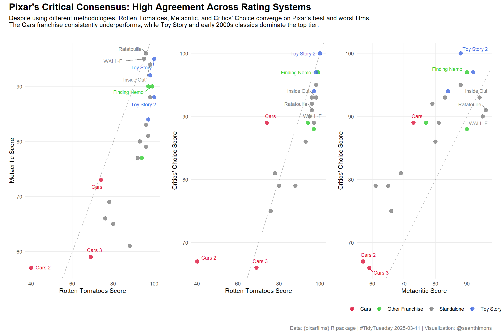

This week’s data explores Pixar films and public reception. The datasets come from the {pixarfilms} R package by Eric Leung, which provides information about Pixar’s film catalog, including production details and critical/audience scores.
Suggested Questions: 1. Why are certain values missing across datasets? 2. Which films receive the highest scores in each rating system, and do different rating sources diverge significantly? 3. How do box office figures correlate with critical ratings and audience scores? 4. Are there patterns between domestic versus worldwide box office performance and critical reception?
Loading necessary packages
My handy booster pack that allows me to install (if needed) and load my usual and favorite packages, as well as some helpful functions.
raw <- tidytuesdayR::tt_load('2025-03-11')pixar_films <- raw$pixar_filmspublic_response <- raw$public_response
Exploratory Data Analysis
The my_skim() function is a modified version of the skimr::skim() function that returns the number of missing data points (cells as NA) as well as the inverse (e.g.: number of rows that are notNA), the count, minimum, 25%, median, 75%, max, mean, geometric mean, and standard deviation. It also generates a little ASCII histogram. Neat!
Pixar Films Dataset
my_skim(pixar_films)
Data summary
Name
pixar_films
Number of rows
27
Number of columns
5
_______________________
Column type frequency:
character
2
Date
1
numeric
2
________________________
Group variables
None
Variable type: character
skim_variable
n_missing
complete_rate
min
max
empty
n_unique
whitespace
film
1
0.96
2
19
0
26
0
film_rating
0
1.00
1
9
0
4
0
Variable type: Date
skim_variable
n_missing
complete_rate
min
max
median
n_unique
release_date
0
1
1995-11-22
2023-06-16
2013-06-21
27
Variable type: numeric
skim_variable
n_missing
complete_rate
n
min
p25
med
p75
max
mean
geo_mean
sd
hist
number
0
1.00
27
1
7.5
14
20.5
27
14.00
10.92
7.94
▇▇▇▇▇
run_time
2
0.93
27
81
95.0
100
106.0
155
104.84
103.73
16.78
▅▇▂▁▁
The pixar_films dataset contains 27 films spanning from 1995 (Toy Story) to 2023 (Elemental). Runtime is remarkably consistent — the median runtime is 100 minutes with most films falling between 95-106 minutes. Only two films are missing runtime data. Most films are rated G or PG, with a handful rated “Not Rated” or showing “N/A” (likely for recent releases where ratings weren’t finalized at data collection time).
One film title is missing entirely, which we’ll need to investigate when joining with the public response data.
The public_response dataset contains critical scores from three professional rating aggregators: Rotten Tomatoes, Metacritic, and Critics’ Choice Awards. All three show Pixar films performing exceptionally well:
Rotten Tomatoes: Mean of 89.2, with most films in the 84-97.5 range
Metacritic: Mean of 80.0, slightly more critical with a 71-90 range
Critics’ Choice: Mean of 87.1, most consistent with a tight 81-93 range
The cinema_score variable contains audience grades (all A+, A, or A-), reflecting strong public reception across the board.
Missing Data Patterns
The public response dataset contains 24 films compared to 27 in the production data. Additionally, one film in each dataset is missing a Rotten Tomatoes score, one is missing a Metacritic score, and three are missing Critics’ Choice scores. This likely reflects:
Recent releases — Turning Red (2022) and Lightyear (2022) may have been excluded from critical aggregation due to direct-to-streaming releases or data collection timing
Incomplete critical coverage — Some films didn’t receive Critics’ Choice Awards consideration in their release year
Data Integration
Let’s join the two datasets and create some useful derived variables:
pixar_combined <- pixar_films %>%left_join(public_response, by ='film') %>%mutate(year = lubridate::year(release_date),decade =paste0(floor(year /10) *10, 's'),# Flag franchise filmsis_cars =str_detect(film, "^Cars"),is_toy_story =str_detect(film, "^Toy Story"),is_finding =str_detect(film, "^Finding"),is_incredibles =str_detect(film, "^The Incredibles"),# Categorize as franchise or standalonefranchise =case_when( is_cars ~"Cars", is_toy_story ~"Toy Story", is_finding ~"Finding Nemo/Dory", is_incredibles ~"The Incredibles",TRUE~"Standalone" ) )# Quick check on missing filmscat("Films missing from public_response data:\n")
The three rating systems show strong positive correlation (r = 0.80-0.87), indicating substantial agreement on which Pixar films are exceptional and which fall short. However, the correlations aren’t perfect, suggesting some interesting divergences worth exploring.
# A tibble: 3 × 6
source mean sd min max range
<chr> <dbl> <dbl> <dbl> <dbl> <dbl>
1 rotten_tomatoes 89.2 14.2 40 100 60
2 metacritic 80 12.3 57 96 39
3 critics_choice 87.1 9.4 66 100 34
Rating System Characteristics
Rotten Tomatoes has the widest range (60 points from 40 to 100), making it the most discriminating system for Pixar films
Metacritic occupies the middle ground with a 39-point range and lowest mean (80.0), suggesting slightly more critical standards
Critics’ Choice shows the tightest distribution (34-point range), rarely deviating far from its 87.1 mean — the most “generous” or consistent rating source
# A tibble: 3 × 3
film year rotten_tomatoes
<chr> <dbl> <dbl>
1 Cars 2 2011 40
2 Cars 3 2017 69
3 Cars 2006 74
The Toy Story franchise and Finding Nemo dominate the top spots, while the Cars franchise occupies all three bottom positions. This pattern holds across rating systems — the Cars films consistently underperform relative to Pixar’s overall critical standing.
Visualization: Rating System Agreement
Now let’s visualize how the three rating systems compare. I’ll create a scatter plot matrix showing pairwise comparisons, with films color-coded by franchise and labeled for outliers.
# Prepare data for plottingplot_data <- pixar_combined %>%filter(!is.na(rotten_tomatoes) |!is.na(metacritic) |!is.na(critics_choice)) %>%select(film, year, franchise, rotten_tomatoes, metacritic, critics_choice) %>%mutate(# Label only outliers and top performerslabel =case_when( franchise =="Cars"~ film, film %in%c("Toy Story", "Toy Story 2", "WALL-E", "Ratatouille","Finding Nemo", "Inside Out") ~ film,TRUE~"" ),# Color by franchisefranchise_color =case_when( franchise =="Cars"~"Cars", franchise =="Toy Story"~"Toy Story", franchise %in%c("Finding Nemo/Dory", "The Incredibles") ~"Other Franchise",TRUE~"Standalone" ) )# Create three scatter plotsp1 <- plot_data %>%ggplot(aes(x = rotten_tomatoes, y = metacritic)) +geom_abline(intercept =0, slope =1, linetype ="dashed",color ="gray50", linewidth =0.5, alpha =0.6) +geom_point(aes(color = franchise_color), size =3, alpha =0.8) +geom_text_repel(aes(label = label, color = franchise_color),size =3, max.overlaps =20,box.padding =0.5, force =2) +scale_color_manual(values =c("Cars"="#DC143C", # Crimson red for underperformers"Toy Story"="#4169E1", # Royal blue for top franchise"Other Franchise"="#32CD32", # Lime green"Standalone"="#808080"# Gray ) ) +labs(x ="Rotten Tomatoes Score",y ="Metacritic Score",color =NULL ) +theme_minimal(base_size =11) +theme(legend.position ="none",panel.grid.minor =element_blank(),plot.margin =margin(10, 10, 10, 10) )p2 <- plot_data %>%ggplot(aes(x = rotten_tomatoes, y = critics_choice)) +geom_abline(intercept =0, slope =1, linetype ="dashed",color ="gray50", linewidth =0.5, alpha =0.6) +geom_point(aes(color = franchise_color), size =3, alpha =0.8) +geom_text_repel(aes(label = label, color = franchise_color),size =3, max.overlaps =20,box.padding =0.5, force =2) +scale_color_manual(values =c("Cars"="#DC143C","Toy Story"="#4169E1","Other Franchise"="#32CD32","Standalone"="#808080" ) ) +labs(x ="Rotten Tomatoes Score",y ="Critics' Choice Score",color =NULL ) +theme_minimal(base_size =11) +theme(legend.position ="none",panel.grid.minor =element_blank(),plot.margin =margin(10, 10, 10, 10) )p3 <- plot_data %>%ggplot(aes(x = metacritic, y = critics_choice)) +geom_abline(intercept =0, slope =1, linetype ="dashed",color ="gray50", linewidth =0.5, alpha =0.6) +geom_point(aes(color = franchise_color), size =3, alpha =0.8) +geom_text_repel(aes(label = label, color = franchise_color),size =3, max.overlaps =20,box.padding =0.5, force =2) +scale_color_manual(values =c("Cars"="#DC143C","Toy Story"="#4169E1","Other Franchise"="#32CD32","Standalone"="#808080" ),name =NULL ) +labs(x ="Metacritic Score",y ="Critics' Choice Score",color =NULL ) +theme_minimal(base_size =11) +theme(legend.position ="bottom",panel.grid.minor =element_blank(),plot.margin =margin(10, 10, 10, 10) )# Combine with patchworkcombined_plot <- (p1 | p2 | p3) +plot_annotation(title ="Pixar's Critical Consensus: High Agreement Across Rating Systems",subtitle ="Despite using different methodologies, Rotten Tomatoes, Metacritic, and Critics' Choice converge on Pixar's best and worst films.\nThe Cars franchise consistently underperforms, while Toy Story and early 2000s classics dominate the top tier.",caption ="Data: {pixarfilms} R package | #TidyTuesday 2025-03-11 | Visualization: @seanthimons",theme =theme(plot.title =element_text(size =16, face ="bold", hjust =0),plot.subtitle =element_text(size =11, hjust =0, margin =margin(b =15)),plot.caption =element_text(size =9, hjust =1, color ="gray50") ) )combined_plot

Interpretation
The scatter plot matrix reveals several key patterns:
Strong diagonal clustering — Most films fall near the y=x reference line, confirming the high correlation between rating systems
Cars franchise outlier — Cars 2 (40% on RT, 57 on Metacritic) sits far below the diagonal across all comparisons, representing Pixar’s most universally panned film. Cars and Cars 3 fare better but still underperform the Pixar baseline.
Top-tier consensus — Toy Story 1 & 2, Finding Nemo, WALL-E, Ratatouille, and Inside Out cluster in the upper-right quadrant across all three panels, receiving consistent acclaim regardless of rating methodology.
Metacritic as “tough grader” — Notice how the Metacritic vs. Critics’ Choice panel shows most films below the diagonal — Metacritic systematically assigns lower scores than Critics’ Choice for the same films.
Rotten Tomatoes variance — The RT axis shows the widest spread, particularly in the RT vs. Metacritic panel, where films can differ by 20+ points while still maintaining strong correlation.
Final thoughts and takeaways
This analysis reveals a critical consensus around Pixar’s filmography that transcends individual rating methodologies. Despite differences in aggregation techniques, sample composition, and scoring scales, Rotten Tomatoes, Metacritic, and Critics’ Choice Awards converge remarkably on which Pixar films represent the studio’s creative peaks and valleys.
The Cars franchise emerges as Pixar’s only sustained critical disappointment, occupying the bottom tier across all three rating systems. This pattern likely reflects critics’ perception that these films prioritize merchandise appeal over the narrative sophistication and emotional depth that define Pixar’s brand. In contrast, the original Toy Story trilogy and early-to-mid 2000s classics like Finding Nemo, WALL-E, and Ratatouille achieve near-universal acclaim.
The tight correlation between rating systems (r ≈ 0.80-0.87) suggests that professional critics largely agree on what makes a Pixar film succeed or fail, even when their scoring scales and methodologies differ. Metacritic’s lower mean scores reflect its weighted-average methodology that privileges “top critics,” while Critics’ Choice shows the least variance, rarely straying from its 87-point baseline. Rotten Tomatoes, with its binary fresh/rotten system aggregated into a percentage, exhibits the widest range and serves as the most discriminating metric for this dataset.
For Further Analysis
This dataset pairs well with box office data (available in the source {pixarfilms} package). Future analyses could explore:
Do critical scores predict domestic vs. international box office performance?
How do sequels compare to original films in both critical reception and commercial success?
Has Pixar’s critical standing evolved over its three-decade run?
Bottom line: When critics agree, they really agree — and they’ve consistently agreed that Pixar sets the bar for animated storytelling, with one notable four-wheeled exception.